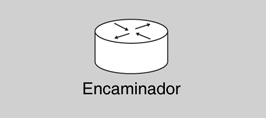

Configuració d'encaminadors
- 
- Imatge que representa un encaminador.
Un encaminador és un dispositiu que interconnecta diferents xarxes i permet la connexió entre elles i té assignada una adreça IP per cada port connectat a una xarxa. Quan un paquet arriba a un encaminador, aquest comprova l’adreça final del paquet i el transmet per la xarxa més adient segons la destinació. Aquesta tasca és el que li dóna nom, encaminador: dóna un camí o ruta al paquet perquè aquest arribi a la destinació.
Funcionament
Un encaminador no és res més que un ordinador dedicat a una única tasca, realitzar l’encaminament de paquets de la millor manera i de la manera més ràpida possible per les diferents interfícies (cada paquet per la interfície més adient). Per realitzar totes aquestes tasques, un encaminador -com un ordinador normal- té una arquitectura interna (vegeu la figura) que cal conèixer.
Internament, un encaminador consta dels elements següents:
ROM (read only memory) és una memòria només de lectura que no es pot esborrar ni gravar. Només la pot gravar el fabricant.
- Memòria RAM: és on emmagatzemen les taules d’encaminament i on hi ha les cues de paquets mentre aquests no han estat enviats per la interfície adequada. A més, com en la memòria RAM de qualsevol ordinador, si hi ha un tall de corrent tot el que hi ha emmagatzemat s’esborra. També s’hi poden trobar els arxius de configuració mentre es treballa amb ells.
- Memòria NVRAM: aquesta memòria emmagatzema la còpia dels arxius de configuració i inici de l’encaminador. El contingut d’aquesta memòria no s’esborra si hi ha un tall del subministrament elèctric.
- Flaix (flash): és la ROM esborrable i reconfigurable que conté la imatge i el microcodi del sistema operatiu. No cal oblidar que un encaminador és un ordinador i com a tal necessita un sistema operatiu per funcionar. Fa les mateixes funcions que faria en un ordinador un “mini disc dur” que només contingués el sistema operatiu utilitzat per arrencar.
- ROM: conté el diagnòstic d’engegada del sistema i programari del sistema operatiu. Per actualitzar el contingut de la ROM, cal extreure el circuit integrat de l’encaminador i substituir-lo per un de nou.
- Interfícies: són les connexions de xarxa per on entren i per on s’envien els paquets cap a les diferents xarxes.
Com s’ha comentat, la funció principal d’un encaminador és interconnectar diferents xarxes per l’encaminament de paquets.
Com es pot observar en la figura, l’encaminador 1 connecta la xarxa 86.34.100.0 amb els encaminadors 2 i 3. Gràcies a aquests encaminadors, un ordinador que està connectat a la xarxa 86.34.100.0 pot enviar informació a màquines connectades a les xarxes 69.12.128.0 o 25.34.250.0, és a dir, es pot enviar a qualsevol màquina.
Perquè un encaminador pugi fer la seva feina eficientment, disposa internament d’una taula amb les xarxes que té connectades directament o indirectament a cada port. S’anomena taula d’encaminament. Aquesta taula es van actualitzant gràcies al protocol ICMP, que envia informació d’encaminador a encaminador per conèixer l’estat de la xarxa i, per tant, saber en tot moment la ruta més adient per enviar els paquets.
Així doncs, perquè l’encaminador 1 pugi transmetre informació a una màquina connectada a la xarxa 121.23.200.0, ha de tenir a la seva taula d’encaminament que per arribar a aquesta xarxa ha d’enviar el paquet cap a l’encaminador 2, i si vol enviar informació a una màquina connectada a la xarxa 69.12.128.0, ha d’enviar la informació cap a l’encaminador 3.
Un exemple del contingut de les taules d’encaminament dels tres encaminadors de la figura les podeu veure a la taula, taula i taula, respectivament.
Xarxa = destinació del paquet Interfície = port de sortida Mètrica = nombre de salts necessaris per arribar a la xarxa.
| Xarxa | Interfície | Mètrica |
|---|---|---|
86.34.100.0 | Ethernet 1 (E1) | 0 |
198.20.30.0 | Sèrie 1 (s1) | 1 |
69.12.128.0 | Sèrie 1 (s1) | 1 |
121.23.200.0 | Sèrie 0 (s0) | 1 |
25.34.250.0 | Sèrie 0 (s0) | 1 |
| Xarxa d’encaminador 1 a encaminador 2 | Sèrie 0 (s0) | 0 |
| Xarxa d’encaminador 1 a encaminador 3 | Sèrie 1 (s1) | 0 |
El primer camp d’aquesta taula indica la xarxa de destinació a la qual es pot accedir, el segon mostra per quina interfície s’ha d’enviar el paquet per arribar a la xarxa indicada pel primer camp i, finalment, el tercer indica quants salts s’han de fer per arribar a la xarxa de destinació, és a dir, per quants encaminadors s’ha de passar per arribar a la xarxa de destinació.
| Xarxa | Interfície | Mètrica |
|---|---|---|
86.34.100.0 | Sèrie 1 (s1) | 1 |
198.20.30.0 | Sèrie 0 (s0) | 1 |
69.12.128.0 | Sèrie 0 (s0) | 1 |
121.23.200.0 | Ethernet 1 (E1) | 0 |
25.34.250.0 | Ethernet 2 (E2) | 0 |
| Xarxa d’encaminador 2 a encaminador 1 | Sèrie 1 (s1) | 0 |
| Xarxa d’encaminador 2 a encaminador 3 | Sèrie 0 (s0) | 0 |
| Xarxa | Interfície | Mètrica |
|---|---|---|
86.34.100.0 | Sèrie 0 (s0) | 1 |
198.20.30.0 | Ethernet 1 (E1) | 0 |
69.12.128.0 | Ethernet 2 (E2) | 0 |
121.23.200.0 | Sèrie 1 (s1) | 1 |
25.34.250.0 | Sèrie 1 (s1) | 1 |
| Xarxa d’encaminador 3 a encaminador 1 | Sèrie 0 (s0) | 0 |
| Xarxa d’encaminador 3 a encaminador 2 | Sèrie 1 (s1) | 0 |
Com s’ha comentat, aquestes taules es mantenen actualitzades perquè els encaminadors s’intercanvien constantment paquets d’informació de l’estat de les xarxes. Si per qualsevol motiu hi hagués una fallada a la xarxa i, per exemple, es tallés una connexió entre un encaminador i un altre (com es pot veure en la figura), aquestes taules s’haurien de modificar adientment.
En la figura es pot observar que la connexió que hi havia entre l’encaminador 1 -per la interfície de sèrie 1 (s1)- i l’encaminador 3 -per la interfície de sèrie 0 (s0)- ha fallat. Això provoca que els paquets que s’envien per aquesta interfície es destrueixin, però també que es generi un paquet ICMP que indica la pèrdua d’aquesta connexió. Les taules s’han de modificar perquè es deixin de perdre paquets. Així doncs, les taules es modifiquen com es mostra en la taula.
| Xarxa | Interfície | Mètrica |
|---|---|---|
86.34.100.0 | Ethernet 1 (E1) | 0 |
198.20.30.0 | Sèrie 0 (s0) | 2 |
69.12.128.0 | Sèrie 0 (s0) | 2 |
121.23.200.0 | Sèrie 0 (s0) | 1 |
25.34.250.0 | Sèrie 0 (s0) | 1 |
| Xarxa d’encaminador 1 a encaminador 2 | Sèrie 0 (s0) | 0 |
| Xarxa d’encaminador 1 a encaminador 3 | * | * |
La mètrica de dues xarxes de destinació ha variat, ja que ara no tenen un camí directe. Les sortides que es realitzaven per la interfície sèrie 1 ara es faran per la sèrie 0, però amb una mètrica més alta -és a dir, necessitaran més salts per arribar a la destinació.
| Xarxa | Interfície | Mètrica |
|---|---|---|
86.34.100.0 | Sèrie 1 (s1) | 1 |
198.20.30.0 | Sèrie 0 (s0) | 1 |
69.12.128.0 | Sèrie 0 (s0) | 1 |
121.23.200.0 | Ethernet 1 (E1) | 0 |
25.34.250.0 | Ethernet 2 (E2) | 0 |
| Xarxa d’encaminador 2 a encaminador 1 | Sèrie 1 (s1) | 0 |
| Xarxa d’encaminador 2 a encaminador 3 | Sèrie 0 (s0) | 0 |
Aquesta taula no varia perquè la connexió que ha fallat és la que hi connectava directament els encaminadors 1 i 3.
| Xarxa | Interfície | Mètrica |
|---|---|---|
86.34.100.0 | Sèrie 1 (s1) | 2 |
198.20.30.0 | Ethernet 1 (E1) | 0 |
69.12.128.0 | Ethernet 2 (E2) | 0 |
121.23.200.0 | Sèrie 1 (s1) | 1 |
25.34.250.0 | Sèrie 1 (s1) | 1 |
| Xarxa d’encaminador 3 a encaminador 1 | * | * |
| Xarxa d’encaminador 3 a encaminador 2 | Sèrie 1 (s1) | 0 |
En aquest cas, passa el mateix que en l’exemple de l’encaminador 1: els paquets que abans s’enviaven per la interfície sèrie 0 ara s’envien per la interfície sèrie 1 amb una mètrica més alta. Com podeu observar, la xarxa entre l’encaminador 3 i 1 no apareix, ja que és la xarxa que ha fallat i, per tant, no s’hi pot arribar de cap manera.
El fet que un encaminador connecti amb diferents xarxes per l’encaminament dels paquets transmesos per les xarxes fa que aquest element hagi de tenir una configuració correcta. Així doncs, per al funcionament correcte dels encaminadors, s’han de configurar correctament.
Configuració bàsica
Perquè un encaminador funcioni correctament, cal configurar-lo: s’ha de connectar a un ordinador, ja que un encaminador no té teclat ni monitor per veure què és el que s’hi fa.
L’encaminador i la màquina es connectaran amb un cable de sèrie especial, ja que en una punta hi ha un connector RJ-45 i a l’altra hi ha un connector SUB-D DB9 -que és el que es connecta al port COM. El connector RJ-45 es connecta a la part del darrere de l’encaminador i el connector DB9 es connecta al port COM 1 de l’ordinador.
Per comunicar-se amb l’encaminador, s’utilitza l’aplicació de l’Hyperterminal (figura) en cas que es faci servir un sistema operatiu Windows. O el gtkterm si el sistema operatiu és Linux.
Un cop escollit el nom que es donarà a la connexió, cal indicar per quin connector es farà la connexió; normalment s’utilitza el COM 1 (figura).
Les versions d’MS-Windows posteriors a XP ja no incorporen l’aplicació Hyperterminal. Podeu utilitzar al seu lloc l’aplicació PuTTY (http://www.putty.org/). Els paràmetres de la connexió seran els mateixos.
Un cop s’ha indicat a quin connector està connectat l’encaminador, s’ha de configurar la connexió (figura).
Elecció de la interfície
Normalment l’encaminador es connecta al port COM 1 de l’ordinador. Si no s’ha connectat a aquest port, només cal indicar a quin port s’ha fet.
Aquesta connexió normalment es fa a una velocitat de 9600 bps amb una transmissió de 8 bits de dades sense paritat i 1 bit d’aturada.
La configuració...
…que accepten els encaminadors per poder fer la connexió de configuració és la que es mostra en aquesta figura. Si aquesta varia, l’encaminador no serà capaç de conversar amb la màquina connectada.
Si el sistema operatiu que s’utilitza és el Linux, l’aplicació necessària per a la comunicació amb l’encaminador es diu gtkterm (figura). Si no es realitza utilitzant aquesta configuració, és molt probable que no es pugui establir la connexió i, per tant, no podreu configurar l’encaminador.
Per configurar-la s’ha d’anar a Configuració i seleccionar Port del menú desplegable. Un cop seleccionat, s’obrirà la finestra de configuració com es mostra a la figura.
Cal recordar que la interfície COM 0 en Linux és el port /dev/ttyS0. La resta de configuracions són les mateixes que per al programa Hyperterminal de Windows.
Un cop feta aquesta configuració, ja es pot establir la connexió amb l’encaminador i configurar tot allò que faci falta. Per a fer les configuracions necessàries, disposareu d’un simulador d’encaminador perquè d’aquesta manera no hàgiu de tocar el vostre, no fos cas que després no us poguéssiu connectar a Internet a causa que hàgiu configurat alguna cosa malament.
Com que utilitzarem un simulador de xarxes per realitzar les configuracions, no serà imprescindible utilitzar el programa HyperTerminal ni cap de similar. No obstant això, és molt recomanable almenys llegir el que s’ha indicat d’aquests programes per saber com funcionen. Són els que caldrà utilitzar a la realitat.
Amb el simulador de Cisco la primera pantalla que veureu serà la que es mostra a la figura.

Per afegir dispositius a la xarxa que simulem cal fer els següents clics:
- Al tipus de dispositiu que volem situar (part inferior esquerra de la finestra).
- Al dispositiu concret que volem afegir (part inferior esquerra de la finestra).
- Al lloc on el volem posar (requadre blanc gran).
A la figura figura es mostren aquestes zones.

Per connectar dispositius de la xarxa que simulem cal fer els següents clics:
- A la icona raig (part inferior esquerra de la finestra).
- Al tipus de cable que utilitzarem (part inferior esquerra de la finestra).
- Al primer dispositiu a connectar (dins del requadre blanc gran). Surt un desplegable per triar la interfície associada al cable.
- Al segon dispositiu a connectar (exactament igual que al pas anterior).
A la figura figura es mostra on cal fer aquests clics per unir dos commutadors.

Amb aquest simulador, quan feu clic a sobre d’un dispositiu i, a la finestra que apareix, seleccioneu la pestanya CLI, veureu una pantalla com la de la figura, que seria la mateixa que veuríeu si empréssiu les aplicacions Hyperterminal i gtkterm per configurar un commutador físicament.
Cal respondre que no a la pregunta que ens fan (“Continue with configuration dialog?”) i, després, picar un enter. Ens apareixerà l’indicador del sistema (Router>) que ens indica que podem introduir ordres.
Abans de començar, cal saber un parell de coses. En primer lloc, hi ha diversos modes de treballar amb un encaminador:
- Mode d’usuari: quan treballeu en mode d’usuari tindreu un accés limitat a l’encaminador. Per saber que esteu en mode d’usuari, heu de mirar l’indicador: si l’aspecte és Router>, voldrà dir que esteu en mode d’usuari.
- Mode privilegiat: en aquest mode tindreu un accés més ampli a l’encaminador. Així doncs, des d’aquest mode podreu fer una anàlisi detallada de l’estat de l’encaminador i podreu manipular els arxius de configuració. Per saber que esteu en mode privilegiat, també heu de mirar l’indicador: en aquest cas l’indicador ha de tenir la forma Router#, on Router és el nom que s’ha donat a l’encaminador.
- Mode de configuració global: des d’aquest mode podeu utilitzar ordres de configuració simples. Per saber que esteu en aquest mode, l’aspecte de l’indicador és Router(config)#.
- Altres modes de configuració: aquest mode permet configuracions més detallades. Per saber que esteu en aquest mode, també heu d’observar l’indicador: en aquest cas, tindrà un aspecte similar a Router(config - mode)#, on el mode indica quina configuració realitza.
- Router(config - if)# configuració d’una interfície
- Router(config - subif)# configuració de subinterfícies lògiques d’una interfície física
- Router(config - line)# configuració d’una línia de terminal
- Router(config - controller)# configuració d’una controladora
- Router(config - router)# configuració de protocols d’encaminament
Tingueu en compte que treballant amb els diferents modes és quan tindreu més problemes, ja que intentareu configurar alguna cosa des d’un mode equivocat amb les ordres correctes i no trobareu on és l’error.
Un cop sabem ja els modes de treball, provarem diferents ordres. Entreu al simulador i en mode d’usuari mireu la informació de la versió del sistema operatiu amb l’ordre show version (figura).
Hi ha una sèrie d’ordres que es poden utilitzar en mode d’usuari però que no varien la configuració de l’encaminador, ja que un encaminador només es pot configurar en mode de configuració de terminal.
Show version
Aquesta ordre s’utilitza en mode d’usuari i mostra tota la informació referent al sistema operatiu com la versió, la quantitat, tipus d’interfícies de l’encaminador, etc.
A més, per poder comprovar les configuracions cal estar en mode privilegiat, ja que en aquest mode es té un control més gran de tota la informació de l’estat de l’encaminador: es pot comprovar l’estat de totes les interfícies, comprovar la configuració i protocols només d’una interfície, examinar els protocols utilitzats per l’encaminador, etc.
Per configurar l’encaminador, cal estar en mode de configuració global. A partir d’aquest mode es pot començar la configuració entre els altres modes per configurar pas a pas l’encaminador. Si es volen configurar les interfícies, cal entrar en mode de configuració d’interfície, etc.
enable
Amb l’ordre enable, es passa de mode d’usuari a mode privilegiat, mode des d’on es comprovaran les configuracions de l’encaminador.
Per poder fer les comprovacions de l’estat de les interfícies, en primer lloc s’ha de configurar l’encaminador. Per aconseguir configurar-lo cal passar a mode privilegiat executant l’ordre enable. Per tornar a mode d’usuari, l’ordre serà disable o exit. Executeu, doncs, l’ordre enable (figura).
Com podeu comprovar, l’indicador ha canviat de Router> a Router#. Aquest fet indica que el pas d’un mode a l’altre s’ha realitzat correctament.
Abans de començar la nova configuració de l’encaminador, s’ha de comprovar la configuració actual de les connexions mitjançant l’ordre show running- config: per exemple, s’ha de veure si ja tenen una configuració, si estan activades o no. Si utilitzeu el simulador d’encaminador, com que encara no s’ha configurat res, ens indicarà que cap interfície no té adreça IP i que estan en l’estat de caigudes (o shutdown), és a dir, que no poden rebre ni enviar.
Quan executeu aquesta ordre, us apareixerà el nombre d’interfícies de què disposa aquest encaminador. Comprovareu que té diferents interfícies de sèrie i diverses d’Ethernet: les primeres són les que s’utilitzen per connectar un encaminador amb l’altre, mentre que les segones són les que connecten amb les diferents xarxes d’ordinadors.
També us apareixerà altra informació que haureu de tenir en compte com pot ser el nom de l’ordinador -és a dir, el nom de l’encaminador-, així com informació sobre si l’encaminador disposa de contrasenya o no tant per configurar-lo com per tenir-hi accés; a més, també dóna informació de quines són les xarxes a les quals dóna accés.
La figura il·lustra la sortida de l’ordre show running-config.
Com podeu comprovar, aquí apareixen totes les interfícies de l’encaminador, però en aquest moment no n’hi ha cap de configurada.
Show running-config
Aquesta ordre serveix perquè l’encaminador mostri l’estat de la seva configuració, les adreces IP i l’estat de cada interfície, el nom de l’encaminador, si hi ha contrasenya o no, etc.
Per aprendre com es configuren els encaminadors, se’n configuraran dos (els encaminadors 1 i 2). Es configuraran les adreces de sèrie, que són les que connecten els dos encaminadors entre ells i les que permeten enviar paquets d’un encaminador a l’altre. La configuració es farà tenint en compte les dades de la taula següent:
| Encaminador | Nom de l’encaminador | Adreça de sèrie | Màscara subxarxa | Contrasenya de configuració | Contrasenya de consola |
|---|---|---|---|---|---|
| 1 | ABM | Sèrie 2/0 201.100.11.1 | 255.255.255.0 | encaminador | terminal |
| 2 | BTA | Sèrie 3/0 201.100.11.2 | 255.255.255.0 | encaminador | terminal |
Els passos que se seguiran per realitzar aquesta configuració són els següents:
- Afegir els dos encaminadors i connectar-los a través del port sèrie.
- Canviar el nom a l’encaminador.
- Configurar la interfície sèrie 0.
- Canviar la contrasenya de configuració.
- Canviar la contrasenya de consola.
En primer lloc afegirem dos encaminadors del tipus “Generic” (la penúltima icona de la fila dels encaminadors). El simulador els numera automàticament com a “Router1” i “Router2”. Per fer-ho, podeu seguir els passos explicats anteriorment.
Ara cal afegir el cable que els uneix. Per fer-ho, cal fer clic a la zona inferior esquerra, sobre del raig i, a continuació, seleccionar el tipus de cable que es representa per un cable vermell amb un rellotge (a la figura es veu on cal fer aquests clics). Aquest tipus de cable correspon a un cable sèrie.
Un cop seleccionat el cable, cal fer clic a l’encaminador 1, seleccionar la interfície Se2/0. A continuació, cal fer el mateix amb l’encaminador 2. Amb això ja tenim els commutadors en xarxa i podem començar a configurar-los.
Per poder configurar l’encaminador cal abans tenir l’encaminador en mode de configuració global. Per arribar a aquest mode, primer cal passar de mode d’usuari a mode privilegiat i, un cop en mode privilegiat, s’ha de passar a mode de configuració global.
Per passar de mode d’usuari a mode privilegiat s’utilitza l’ordre enable, i per passar de mode privilegiat a mode de configuració global es fa servir l’ordre configure terminal (figura).
Podeu comprovar que s’ha passat de mode d’usuari a mode privilegiat, ja que l’indicador ha canviat a Router#, i finalment s’ha canviat a mode de configuració global perquè l’indicador mostra Router(config)#.
El primer que s’ha de fer és assegurar-se que l’encaminador té activat el protocol d’encaminament RIP: per a això, simplement s’ha d’entrar al mode de configuració de l’encaminador i sortir-ne. S’entra al mode de configuració de l’encaminador amb l’ordre router rip i es torna al mode de configuració global utilitzant l’ordre exit (figura).
Els protocols d’encaminament com RIP fan possible que els encaminadors intercanviïn informació per construir i mantenir les taules d’encaminament.
El primer pas que s’ha indicat és el canvi de nom de l’encaminador, que es fa amb l’ordre hostname i el nou nom de l’encaminador (figura).
El segon pas és la configuració de la interfície de sèrie 2/0 (figura). Per fer-ho, s’ha de tornar a canviar a un mode que permeti una configuració més gran. El canvi de mode es farà mitjançant l’ordre interface serial 2/0, ja que és justament la interfície de sèrie 2/0 la que es vol configurar. I en aquest punt s’indicarà la IP de la interfície i la màscara que s’utilitzarà (sempre s’ha d’indicar la màscara de subxarxa).
hostname
Amb aquesta ordre es canviarà el nom a l’encaminador. S’ha d’executar des del mode de configuració global.
I ara només cal configurar la interfície de sèrie 2/0: se li ha de donar l’adreça IP i la màscara que s’utilitzarà, i a més s’ha d’activar. Si no s’activa la interfície, aquesta no és reconeguda per l’encaminador (figura).
Interfície de sèrie 2/0
Ordre per configurar la interfície de sèrie 2/0. En aquest punt s’indica l’adreça IP d’aquest terminal, la màscara de subxarxa i la velocitat de rellotge, i s’activa la interfície.
Un cop configurada l’adreça IP, cal configurar la velocitat de rellotge, ja que una de les màquines és l’encarregada de controlar-lo. Si no es configurés aquesta velocitat, no hi podria haver connexió entre els encaminadors, ja que l’un enviaria a una velocitat i l’altre rebria a una altra, amb la qual cosa es podrien perdre bits (figura).
ip address
Ordre necessària per configurar la interfície: s’ha d’introduir la seva adreça IP i indicar quina màscara de subxarxa s’utilitzarà en la interfície que es configura.
Només cal configurar la velocitat quan es connecten les interfícies sèrie (i només a una de les interfícies); a les interfícies Ethernet o FastEthernet no cal fer-ho.
S’ha de tenir en compte que quan es connecten dos encaminadors per la interfície de sèrie, tal com es fa en aquest cas, la connexió es realitza mitjançant un cable anomenat DTE-DCE: un encaminador es configura com a DTE i l’altre, com a DCE. La velocitat de rellotge la controla l’encaminador configurat com a DCE.
Clock rate
Ordre per configurar la velocitat de rellotge. Aquesta ordre només cal aplicar-la a l’encaminador que fa funcions de DCE, en aquest cas a l’encaminador 1. Aquesta màquina controlarà el rellotge de la comunicació.
Un cop s’ha configurat la velocitat de rellotge, cal activar la interfície de sortida per poder realitzar les transmissions mitjançant l’ordre no shutdown (figura), ja que shutdown significa que la interfície està caiguda, és a dir, que no es pot enviar ni rebre informació per aquesta interfície.
Un cop configurada la interfície de sèrie, es pot comprovar que s’ha fet correctament. Per a això, cal sortir del mode de configuració de la interfície i del mode de configuració global utilitzant l’ordre exit, ja que es comprova l’estat de les interfícies des del mode privilegiat amb l’ordre show running-config.
Normalment els ports no configurats estan inactius en l’estat shutdown. Per poder transmetre per la interfície, cal activar-la amb aquesta ordre.
L’ús d’aquesta ordre mostra la configuració de totes les interfícies, per això només cal buscar les dades que ens interessen. En aquest cas, la interfície que s’ha configurat és la de sèrie 2/0. Depenent de l’encaminador, hi pot haver diferents interfícies —del tipus sèrie i del tipus Ethernet—; per això el nombre identifica de quina interfície es tracta, ja que n’hi ha diferents del mateix tipus (figura).
El pas següent és canviar la contrasenya d’accés al terminal. Per fer aquest canvi, s’ha d’executar des del mode de configuració de consola i, per tant, s’han d’executar les ordres configure terminal per entrar al mode de configuració global i line console 0 per entrar al mode de configuració de consola (figura).
Un cop arribats a aquest punt, només cal aplicar l’ordre per canviar la contrasenya, que és password router (o qualsevol altra paraula en lloc de router); una vegada s’ha fet això, s’ha d’aplicar l’ordre login per activar aquesta contrasenya i fer que l’encaminador la demani.
line console 0
Aquesta ordre serveix per poder assignar una contrasenya a la consola i d’aquesta manera evitar l’accés a l’encaminador a persones autoritzades.
L’últim pas que queda és el canvi de contrasenya de configuració, és a dir, perquè cada vegada que canvieu de mode d’usuari a mode privilegiat us demani aquesta contrasenya (figura). Des del mode de configuració global s’ha de passar a mode de configuració de terminal vty amb l’ordre line vty 0 4; aquí només cal canviar la contrasenya com s’ha fet anteriorment, aplicant l’ordre password router (o qualsevol altra paraula en lloc de router) i activant-la amb login.

En aquest punt, cal indicar a l’encaminador que activi la contrasenya aplicant l’ordre enable password terminal (o qualsevol altra paraula en lloc de terminal). Si no es fa aquest pas, l’encaminador no demanarà la contrasenya quan es canviï a mode privilegiat.
Utilitzant aquesta ordre es configura una contrasenya per canviar a mode privilegiat i poder fer comprovacions de l’estat de l’encaminador (figura).
Un cop s’ha acabat la configuració del primer encaminador, es realitza una comprovació per verificar que demana totes les contrasenyes i que s’han fet correctament les configuracions.
enable password
Un cop s’ha configurat la contrasenya, cal activar-la; altrament, no serveix de res haver-la configurat ja que l’encaminador no la demanarà.
Cal recordar que s’ha estat treballant a la memòria RAM de l’encaminador i que, per tant, no s’ha guardat cap configuració realitzada. Per això, si s’apaga l’encaminador, s’haurà de començar de nou.
Per fer aquest pas sortirem de l’encaminador sense tancar-lo, ja que encara no s’ha guardat la configuració, i es tornarà a entrar per comprovar que demana les contrasenyes. Un cop estigueu en mode privilegiat, executareu l’ordre exit per comprovar la configuració de les contrasenyes (figura). És molt important no apagar l’encaminador, ja que no s’han desat els canvis.
Un cop s’ha comprovat que l’encaminador demana les contrasenyes i que la configuració és la correcta, ja es pot guardar la configuració a la memòria NVRAM per no perdre-la si hi ha un tall de corrent.
Aquest pas és molt important i s’ha d’anar en compte amb l’ordre; en cas contrari, es podria esborrar tota la configuració de l’encaminador i s’hauria de tornar a instal·lar-ne el sistema operatiu.
L’ordre que s’ha d’executar per guardar la configuració de memòria RAM a la memòria NVRAM (figura) és copy running-config startup-config.
Durant tota l’estona s’ha estat treballant sobre la memòria volàtil de l’encaminador; això vol dir que en el moment en què l’encaminador deixés de rebre alimentació, aquesta memòria s’esborraria i es perdria tota la feina feta. La memòria volàtil és la running-config memòria d’execució; per no perdre aquesta configuració s’ha de copiar a la memòria NVRAM, que és la que conté les dades d’arrencada startup-config.
Un cop s’ha comprovat que la configuració nova és correcta, s’ha d’emmagatzemar a la memòria no volàtil de l’encaminador per no perdre-la si hi ha un tall de corrent; en aquest supòsit, només caldrà tornar-la a carregar.
Després de configurar el primer encaminador, cal configurar el segon seguint els mateixos passos. Ara, però, no s’ha d’activar l’ordre clock rate, ja que l’encaminador ABM és l’encarregat de proporcionar el rellotge a la connexió.
Un cop configurat el segon encaminador, cal comprovar si hi ha connexió entre les dues màquines amb l’ordre ping: n’hi ha prou de fer ping IP, on IP és l’adreça IP de la màquina de la qual voleu comprovar que està connectada a la que utilitzeu. Si s’executa l’ordre ping des del segon encaminador que s’ha configurat, es veurà el que es mostra en la figura.
Com es pot comprovar en la figura, quan s’ha executat l’ordre ping a la màquina amb adreça IP 201.100.11.1 s’ha rebut un missatge que indica que tots els paquets enviats per comprovar que l’altra màquina hi estava connectada han arribat correctament: han arribat cinc paquets de cinc paquets enviats; si l’altra màquina no hi estigués connectada, la resposta hauria estat zero paquets de cinc.
ping
Amb aquesta ordre es comprova a través de la xarxa si hi ha connexió entre les dues màquines i, per tant, si es poden transferir les dades.
Tal com s’ha configurat l’encaminador per poder comprovar que la connexió entre les dues màquines és correcta, s’ha d’aplicar un ping a l’adreça IP, cosa que provoca que hagi de recordar les adreces IP de les màquines que estan connectades. Es pot variar la configuració fent un ping al nom de la màquina.
Per canviar aquesta configuració, cal entrar al mode de configuració global i introduir quin nom de màquina tenen les diferents adreces IP amb l’ordre ip host nom_màquina IP. Només hi pot haver una línia per cada màquina connectada (figura).
Aquesta configuració s’ha de repetir a cada encaminador, i així cada encaminador coneixerà les diferents adreces IP que té la resta d’encaminadors; es pot provar fent un ping al nom de la màquina (figura).
Una ordre que s’utilitza molt és help, amb la qual es poden comprovar quines ordres hi ha disponibles a cada moment. A més, si mentre configureu no sabeu quina és l’ordre que heu d’indicar o les opcions que té una ordre, amb help es mostraran les opcions disponibles i podreu triar l’opció més adient. L’ordre help s’invoca picant el signe interrogant (?). L’interrogant pot escriure’s en qualsevol moment i ens surt automàticament la informació d’ajut.
ip host nom_màquina IP
Amb aquesta ordre s’indica a l’encaminador que es pot arribar a la màquina amb un nom determinat des de les adreces IP especificades. Per tant, quan es fa un ping al nom de la màquina, en realitat es fa un ping a cada una de les adreces IP que consten després del nom.
En la figura es poden veure totes les ordres que es poden utilitzar des del mode de configuració global. A cada mode de configuració hi ha una llista tan llarga o més de totes les ordres amb què podeu configurar l’encaminador.
Com es pot comprovar, en fer el ping al nom de la màquina l’encaminador ha substituït el nom de la màquina per l’adreça IP que se li ha indicat com a adreça d’aquell nom.
Ja s’han vist les ordres més importants que es poden utilitzar per configurar els dos encaminadors, però no són les úniques. A continuació us exposarem algunes ordres més amb una petita explicació del seu funcionament:
Amb l’ordre help en mode de configuració global apareix tota la llista de les ordres.
- clear: serveix per esborrar o reinicialitzar diferents configuracions.
- Exemple 1: clear interface serial 0 esborra la configuració de la interfície de sèrie 0.
- Exemple 2: clear ip route * esborra tota la taula de rutes.
- clock set: permet configurar la data i l’hora del sistema.
- configure terminal: dóna accés al mode de configuració global. Per sortir d’aquest mode cal aplicar l’ordre exit.
- copy: serveix per copiar els arxius de configuració.
- debug: habilita funcions de depuració. Cal anar amb compte amb aquesta ordre, ja que podria bloquejar fàcilment l’encaminador.
- disable: canvia de mode privilegiat a mode d’usuari.
- ping: comprova la connectivitat entre diferents aparells, entre encaminador i encaminador, entre encaminador i ordinador, entre ordinador i encaminador, etc.
- reload: programa per tornar a engegar el sistema.
- send: envia un missatge a altres usuaris, individualment o col·lectivament.
- show access-lists: mostra la llista d’accessos cada vegada que un paquet ha arribat correctament. Les llistes d’accés (ACL) serveixen per filtrar el trànsit.
- show arp: mostra la taula arp, o sigui les adreces MAC amb l’adreça IP corresponent. Cada targeta de xarxa —és a dir, cada interfície— tindrà una MAC i una adreça IP.
- show buffers: mostra estadístiques de la memòria interna.
- show cdp neighbour: mostra informació dels encaminadors més propers de la marca Cisco, ja que és un protocol Cisco (cdp = Cisco discovery protocol).
- show clock: mostra la data i l’hora del sistema.
- show configuration: mostra la configuració amb què l’encaminador inicia, és a dir, la que hi ha emmagatzemada a la memòria NVRAM. Equival a show startup-configuration.
- show controlers: dóna informació dels controladors, la targeta, si el tipus del cable connectat és DTE o DCE, etc.
- show interfaces: mostra l’estat de les interfícies.
- show ip protocols: indica els protocols d’encaminament configurats.
- show ip route: mostra les taules d’encaminament.
- show protocols: dóna els protocols de xarxa habilitats i un resum de les direccions de xarxa ordenades per interfície.
- show running-config: recull la configuració que hi ha en execució.
- show startup-conf: mostra la configuració amb què iniciarà el dispositiu.
- show version: proporciona informació sobre el model de l’encaminador, la versió de sistema operatiu que utilitza, etc.
- traceroute: mostra la ruta fins a arribar a la destinació, per quines adreces IP ha de passar el paquet per arribar a la destinació.
Totes aquestes ordres funcionen amb un encaminador. Si les voleu provar al simulador d’encaminador, és possible que algunes no funcionin perquè probablement no s’ha previst la necessitat d’incloure-les al simulador.
Manteniment i configuració de xarxes amb encaminadors
El manteniment correcte dels encaminadors i la planificació de les còpies de seguretat dels nostres dispositius ens permeten optimitzar el trànsit en la nostra xarxa.
Hem de tenir en compte que els encaminadors no poden treballar sense un sistema operatiu i arxius de configuració, hem de ser capaços de determinar les seqüències d’inici, càrrega i ubicació dels arxius necessaris; i tanmateix, s’ha de garantir la seguretat i la tolerància a errades del sistema.
El manteniment comporta la configuració correcta perquè el sistema operatiu de l’encaminador (IOS) desenvolupi correctament les seves funcions:
IOS
L’IOS és l’element fonamental dels encaminadors. S’encarrega de gestionar tots els dispositius físics i gestiona l’encaminament i la commutació. Normalment resideix en la memòria Flash en forma d’un únic arxiu.
- Tractament de l’encaminament i la commutació.
- Gestió de totes les interfícies.
- Accés fiable i segur als diferents dispositius de la xarxa.
- Escalabilitat de la xarxa.
D’altra banda, hem de fer còpies de seguretat, que ens permetran recuperar l’estat del sistema o actualitzar-lo amb una nova versió.
Les còpies de seguretat són fonamentals per al manteniment correcte del sistema.
La configuració de la xarxa s’ha de fer amb protocols d’encaminament, que ens proporcionen les eines necessàries per connectar diferents encaminadors i proporcionar rutes segures i fiables d’una manera automàtica.
Els protocols d’encaminament automatitzen la gestió de la configuració de la xarxa.
Imatges d'IOS
Els arxius de l’IOS i els de configuració d’inici són els elements fonamentals per al bon funcionament del nostre encaminador, un cop s’han realitzat les fases de POST i d’arrencada (bootstrap) es fa la càrrega de l’IOS. El sistema operatiu pot residir en la memòria Flash, en un servidor TFTP o en la ROM, per determinar on resideix i el tipus d’inici es fa servir el registre de configuració.
En la figura s’observa la seqüència de càrrega de l’IOS i dels arxius de configuració i les diferents ubicacions on poden residir.
Un cop s’ha carregat l’IOS es fa la càrrega de l’arxiu de configuració, i a continuació s’han de fer les còpies de seguretat en un servidor de transferència de fitxers trivial o TFTP per tenir les primeres còpies dels fitxers d’inici i del sistema operatiu IOS.
Els fitxers del sistema operatiu tenen una estructura de noms molt significativa, simplement veient el nom podem interpretar per a quina plataforma s’executa el sistema operatiu, quines característiques té i quin és el format de les dades, des d’on s’executa i si està comprimit. El nom està format per aquestes tres parts separades per guions, per exemple C2500-IS-L. La taula ens mostra les característiques dels noms.
| Plataforma | Característiques | Format |
|---|---|---|
| C2500 | IS | LZ |
| C1700 | BNS | L |
El camp plataforma fa referència al model d’encaminador (C2500 o C1700 en aquest cas). La resta de camps (característiques i format) estan determinats per una composició de sigles. Cadascuna de les diferents sigles té un significat determinat; les de la taula són les més comunes.
Nom de l'arxiu IOS
El nom de l’arxiu IOS que resideix en la memòria Flash ens proporciona informació referent al tipus de plataforma, les seves característiques i el format de l’arxiu.
| Valor | Significat |
|---|---|
| I | Proporciona suport per serveis IP |
| B | Proporciona suport AppleTalk |
| N | Proporciona suport a protocols de xarxa IPX |
| Z | Arxiu comprimit |
| L | Arxiu reubicable |
Podeu veure la versió i el nom de l’arxiu IOS mitjançant l’ordre show version. Si observeu la figura podeu veure un exemple d’ús d’aquesta ordre. Podeu veure, a més, que el programa d’arrencada (bootstrap) show version s’executa des de la memòria ROM, la càrrega del sistema s’ha executat des de la memòria Flash. També es pot veure el valor del camp configuration register, que, en aquest cas, té el valor 0x2102. Aquest valor ens indica el tipus d’inici de l’encaminador mitjançant aquest codi hexadecimal.
Inici de l'encaminador: ROMMON
A vegades ens pot interessar modificar el procés d’inici de l’encaminador. Per fer-ho tenim dos mètodes: un és modificar el registre de configuració i l’altre, usar les ordres boot system. El registre de configuració es pot modificar des del mode privilegiat o amb el monitor de ROM. A continuació especifiquem com es pot modificar de diferents maneres.
L'ordre show version...
…mostra informació referent al sistema operatiu, com és el nom de l’arxiu o informació dels dispositius físics que té l’encaminador.
Modificació de configuració del registre mitjançant ROMMON: El monitor de ROM o ROMMON és una versió mínima del sistema operatiu amb un conjunt de funcions limitades, està ubicat en la memòria ROM i no es pot modificar o actualitzar, per fer-ho caldria incorporar un altre ROM diferent a la placa base de l’encaminador ctrl+pause. Aquest mode de treball ens permet, bàsicament, fer les funcions següents:
ROMMON
El monitor de ROM ens permet restaurar l’IOS, és un sistema operatiu amb un conjunt d’ordres mínim. S’ubica en la memòria ROM, per accedir a aquest mode disposem de la combinació de tecles , que cal pitjar quan està arrencant l’encaminador.
- Restaurar la contrasenya.
- Modificar el registre de configuració.
- Gestionar la seqüència d’inici de l’encaminador.
- Restaurar còpies de seguretat de l’IOS amb TFTP.
- Restaurar còpies de seguretat de l’IOS amb Xmodem.
El ROMMON s’executa automàticament quan l’encaminador no troba cap configuració correcta en la memòria Flash. També podem interrompre el procés d’arrencada de l’encaminador per accedir al ROMMON amb la combinació de tecles ctrl+pause.
Identifiquem que ens trobem en el monitor de ROM pel símbol de sistema:
Ctrl+pause
La combinació de tecles ctrl+pause ens permet accedir al ROMMON. Fa una interrupció en la càrrega del sistema operatiu.
ROMMON 1>
Si som en el monitor de ROM i volem tornar a reiniciar el sistema disposem de l’ordre reset.
ROMMON 2> reset
Les opcions de configuració que es poden utilitzar en el ROMMON les podeu veure en la figura, només cal introduir un ?.
L’ordre reset ens permet sortir del ROMMON i recarregar l’encaminador amb les opcions d’inici que s’hagin configurat.

Des del ROMMON podem modificar el registre de configuració amb l’ordre confreg valor. El registre és un valor que s’emmagatzema en la NVRAM, confreg té una grandària de 16 bits i es representa en format hexadecimal. La funció confreg principal del registre és indicar l’ordre de càrrega de l’IOS. Aquesta ordre depèn del valor que tinguem emmagatzemat. Per modificar la seqüència només cal variar els darrers quatre bits del registre de configuració. El valor per defecte sempre és 0x2102. La taula mostra els valors més comuns que pot tenir el registre de configuració i què volen indicar.
ordre confreg
L’ordre permet modificar la configuració d’inici que resideix al registre de configuració, únicament es pot executar des del monitor de Rom.
| Valor | Funció |
|---|---|
| 0xnnn0 | Inicia l’encaminador amb el monitor de ROM. |
| 0xnnn1 | Inicia l’encaminador des de la memòria Flash. |
| 0xnnn2 fins a 0xnnnF | Inicia l’encaminador des de la memòria NVRAM. |
| 0xnn42 | Inicia l’encaminador sense carregar l’arxiu de configuració. Serveix per recuperar contrasenyes. |
Es pot consultar la configuració actual del registre mitjançant l’ordre show version.
Des del mode de configuració global, amb l’ordre config-register 0x210X podem modificar la configuració d’inici. A continuació amb l’ordre reload reiniciem l’encaminador per tal que es carregui tal com hem indicat.
La figura ens mostra com podem modificar la configuració perquè iniciï amb el monitor de ROM. S’executa l’ordre config-register 0x2100, a continuació guardem la configuració i recarreguem l’encaminador mitjançant l’ordre reload.
En iniciar l’encaminador es carrega el monitor de ROM, s’identifica perquè apareix el símbol de sistema ROMMON>, per tornar a la configuració anterior utilitzem l’ordre confreg 0x2102 i recarreguem el sistema amb l’ordre reset.
ordre config-register
L’ordre config-register permet especificar des de quina ubicació es carrega l’IOS i amb quines condicions. Permet modificar el registre de configuració de 16 bits que conté el valor que defineix el tipus d’inici en format hexadecimal.
Recuperació de contrasenya
Una de les funcions fonamentals del monitor de ROM és la possibilitat de poder recuperar contrasenyes o fer una configuració nova.
Una altre funció molt important del registre de configuració juntament amb el monitor de ROM és la recuperació de contrasenyes, a continuació fem el procés de recuperació:
1. Una vegada observem que no tenim la contrasenya del mode privilegiat, recarreguem l’encaminador amb la combinació de tecles control + pause i accedim al ROMMON.
Assistent de configuració del sistema
Quan arrenquem un encaminador que no té arxiu de configuració (startup-config) ens apareix automàticament una pregunta que ens demana si volem configurar el sistema de manera assistida. Es tracta de l’assistent de configuració. Si no volem configurar l’encaminador fent servir aquesta eina, hem d’indicar que no.
2. A continuació, només cal introduir l’ordre en el ROMMON:
ROMMON 1> confreg 0x2142 ROOMON 2> reset
3. Amb això l’encaminador s’inicia sense carregar l’arxiu de configuració. Com que no hi és, ens apareix l’assistent de configuració del sistema, el podem cancel·lar i tornar a fer una configuració. Llavors podem consultar una còpia del fitxer startup-config per veure la contrasenya sense xifrar i canviar-la per posar-ne una de nova que coneixem nosaltres.
4. Les ordres boot-system ens permeten indicar si l’encaminador executa l’IOS des de la memòria Flash o si s’inicia amb ROMMON, si es poden executar des del mode privilegiat o des del monitor de ROM, aquestes ordres no estan configurades per defecte i l’encaminador s’inicia sempre buscant l’IOS en la Flash, després en un servidor TFTP i finalment en la ROM.
Si volem canviar la seqüència d’inici hem d’utilitzar l’ordre:
boot system Ubicació_d'inici nom_imatge
A continuació podeu veure dos exemples d’ús d’aquesta ordre:
Router(config)#boot system flash c2500-is-l
Aquest exemple indica al sistema que l’inici de l’encaminador es fa des de la memòria Flash i carrega una imatge de l’IOS anomenada c2500-is-l.
Router(config)#boot system rom
Aquest exemple indica al sistema que l’inici de l’encaminador es fa des de la memòria ROM amb ROMMON.
TFTP
El servei de TFTP ens permet disposar de còpies de seguretat per tal de recuperar una imatge de l’IOS o d’un arxiu de configuració.
Un cop l’encaminador s’ha iniciat i hem realitzat les configuracions que necessitem, hem de ser capaços de poder fer còpies de seguretat, per això necessitem un equip de la xarxa que tingui instal·lat el servei de TFTP. Utilitzem, per exemple, el programa Winagents TFTP Service for Windows com a servidor TFTP. La figura ens mostra el procés d’instal·lació del servidor i en quina carpeta resideix.
Servidor TFTP
Els servidors TFTP són de gran importància per a la gestió de les imatges dels encaminadors. Ens permeten fer còpies de seguretat del sistema operatiu i dels arxius de configuració.
A l’entorn virtual Packet Tracer els servidors ja porten incorporat un servidor TFTP; per tant, no n’haurem d’instal·lar cap.
Quan s’ha fet el procés d’instal·lació cal observar la configuració del servidor TFTP, ens mostra per defecte el port 69 per obtenir les connexions del client, els temps de resposta i el directori on s’emmagatzemen les imatges.
Les imatges s’emmagatzemen en el directori arrel que especifiquem en l’opció tftp root directory.
En la figura podeu observar les propietats de configuració del servidor TFTP, ens mostra el port que utilitza el servei i el directori on s’emmagatzemen les imatges.
Per accedir des de l’encaminador al servidor TFTP només ens cal conèixer-ne l’adreça IP i fer la còpia de seguretat de l’IOS o de l’arxiu de configuració (segons les necessitats). Per fer aquestes còpies hem de fer el següent:
1. Còpia de l’IOS show flash. Utilitzem l’ordre show flash per obtenir el nom del fitxer que conté l’IOS, a continuació amb l’ordre copy flash tftp indiquem al sistema show flash que volem fer una còpia de seguretat al servidor TFTP, ens demana quina és l’adreça del servidor i quin és el nom de la imatge de l’IOS d’origen i de destinació (figura).
show flash
Amb l’ordre podem obtenir informació referent a la grandària de la memòria Flash i del seu contingut. Això és molt important per poder fer una còpia de seguretat o restaurar l’IOS.
L’ordre copy flash tftp copia un arxiu de la memòria Flash al servidor TFTP. Si la còpia es fa correctament ens ho ha d’indicar mitjançant el signe ! i ens ha de retornar la quantitat de bytes que s’han copiat.
2. Còpia d’arxiu de configuració. Primer hem de fer una còpia de la configuració activa del fitxer runningconfig al fitxer d’inici startup-config, i a continuació utilitzem l’ordre copy startup-config tftp per fer la còpia de seguretat en el servidor TFTP. Aquesta ordre ens demana l’adreça del servidor i el nom de l’arxiu de configuració d’origen i de destinació (figura).
Per tal de fer còpies de seguretat de l’encaminador al servidor TFTP és necessari que estiguin en la mateixa xarxa per poder obtenir un rendiment millor.
Quan hem fet les còpies de seguretat dels arxius de configuració i de l’arxiu de l’IOS, les tenim disponibles en el servidor de TFTP i les podem recuperar en qualsevol moment que sigui necessari.
3. Restauració de l’IOS. Per carregar una imatge de l’OIS tenim tres maneres de recuperar-la i restaurar-la. Es pot fer des del mode privilegiat amb l’IOS actiu, mitjançant un servidor TFTP o amb una còpia local amb Xmodem. A continuació detallem cadascuna de les diferents maneres de restaurar-la:
a. Actualització des d’un IOS actiu. Utilitzem aquesta opció de restauració de l’IOS quan únicament volem actualitzar l’IOS existent. Cal que tinguem una imatge de l’IOS nou al servidor TFTP i que utilitzem l’ordre copy tftp Flash, ens demana l’adreça IP del servidor TFTP i el nom de la imatge.
b. Restauració amb ROMMON via TFTP. Aquesta opció s’utilitza quan no disposem de cap imatge activa en la memòria Flash, i llavors l’encaminador no ha iniciat cap sistema. Per accedir a ROMMON cal prémer la combinació de tecles ctrl+ pause.
Per connectar-nos des de l’encaminador amb entorn ROMMON a un servidor TFTP hem de configurar prèviament la interfície Ethernet de l’encaminador. Hem de tenir en compte que la instal·lació de ROMMON és mínima i només ens permet configurar la primera interfície Ethernet de l’encaminador.
L'ordre del ROMMON...
…permet visualitzar les variables que utilitza el sistema, per connectar amb un servidor TFTP cal configurar-ne cinc. En recarregar l’encaminador les variables que s’han configurat es buiden.
Una vegada s’ha accedit al ROMMON s’han de configurar cinc paràmetres per poder connectar l’encaminador a un servidor TFTP. Amb l’ordre set podem veure totes les variables que té el monitor de ROM. Les variable a modificar són les que es presenten en la taula.
| Variable | Descripció | Exemple |
|---|---|---|
| IP_ADDRESS= | Adreça interfície Ethernet encaminador | 192.168.0.241 |
| IP_SUBNET_MASK= | Màscara interfície Ethernet encaminador | 255.255.255.0 |
| DEFAULT_GATEWAY= | Porta d’enllaç per defecte | 192.168.0.2 |
| TFTP_SERVER= | Adreça del servidor TFTP | 192.168.0.99 |
| TFTP_FILE= | Arxiu imatge IOS resident al TFTP | c1841-advipservicesk9-mz.124-15.T1.bin-copia |
Hem de tenir en compte a l’hora de generar les variables que s’han d’escriure en la consola amb majúscules. En recarregar l’encaminador o si s’apaga, les variables perden el valor amb què s’han configurat.
La figura mostra com s’han introduït les variables, a continuació s’executa l’ordre set, que ens permetrà veure si els valors s’han configurat correctament, a més de mostrar-nos altres variables del monitor de ROM (o ROMMON).
Quan s’ha confirmat que les variables són correctes a continuació només cal executar l’ordre tftpdnld, aquesta ordre esborra la memòria Flash itftpdnld utilitza el valor de les variables per restaurar la imatge.tftpdnld
A la figura veiem el resultat d’executar l’ordre tftpdnld, la recepció de les dades de la imatge es representa amb el símbol !, quan finalitza, ens indica que s’ha rebut la imatge i on s’ubica.
tftpdnld
L’ordre s’utilitza des del monitor de ROM per restaurar una còpia de seguretat que està en un servidor TFTP. Llegeix les variables del sistema, configura les interfícies i recupera la imatge.
Redundància cíclica o CRC
Redundància cíclica és un càlcul associat a la transferència o a l’emmagatzematge de dades i ens assegura que no hi ha errades. Normalment aquest procés fa una suma de comprovació, en què compara els bytes inicials amb els finals, per detectar l’alteració de les dades en el procés de transferència.
Per recarregar l’encaminador i sortir de ROMMON un cop ha finalitzat la còpia de l’IOS només s’ha de prémer la tecla i, l’encaminador s’inicia normalment i només cal restaurar els arxius de configuració.
c. Restauració amb ROMMON via Xmodem. Aquesta opció s’utilitza quan no disposem de cap imatge activa en la memòria Flash, per accedir a ROMMON cal prémer la combinació de tecles ctrl+pause .
Si no disposem d’un servidor TFTP o no tenim accés a Internet, aquest mètode ens permet recuperar l’IOS mitjançant la transferència de la imatge des d’un directori del PC que actua com a terminal.
Una vegada hem accedit al ROMMON executem l’ordre xmodem -c nom_fitxer_imatge, l’opció -c ens indica que s’ha de fer una comprovació de redundància cíclica en la descàrrega de l’IOS.
L’ordre del ROMMON permet especificar un arxiu de còpia de seguretat que tenim resident en la màquina local. Habitualment s’utilitza quan no disposem d’un servidor de TFTP.
En les figura i figura observem que l’ordre executada és xmodem -c c1841-advipservicesk9-mz.124-15.T1.bin-copia.
En executar l’ordre, la consola ens indica que l’encaminador està preparat per rebre l’arxiu de configuració. Llavors cal fer l’enviament de l’arxiu des del PC terminal, per fer-ho accedim al menú de transferir del Hyperterminal, en l’opció enviar podem especificar el nom de l’arxiu. S’ha de seleccionar com a protocol Xmodem.
1. Restauració de l’arxiu de configuració. Quan no es carrega correctament l’arxiu de configuració o no disposem d’aquest arxiu, i en tenim una còpia en el servidor TFTP, podem recuperar una configuració anterior mitjançant l’ordre copy tftp startup-config,hem d’indicar quina és l’adreça IP del servidor TFTP, aquesta ordre es pot utilitzar des del mode privilegiat o des del ROMMON.
Per tal de trobar-nos en la situació de no tenir arxiu de configuració l’esborrarem. En la figura podeu observar com s’esborra el fitxer de configuració d’inici amb l’ordre erase startup-config, a continuació fem copy TFTP startup-config.
La figura ens mostra que una vegada s’ha esborrat el fitxer de configuració i hem recarregat l’encaminador ens apareix el quadre de diàleg de configuració del sistema, no configurem absolutament res ja que restaurem l’arxiu mitjançant TFTP.
copy TFTP startup-config
L’ordre restaura un arxiu de configuració ubicat en un servidor TFTP i substitueix l’arxiu startupconfig. Podem executar aquesta ordre des del mode privilegiat o amb el ROMMON.
La figura mostra la configuració d’una interfície amb una adreça IP de la mateixa xarxa del servidor TFTP, a continuació s’utilitza l’ordre copy TFTP startup-config. Observem que la càrrega de l’arxiu es fa correctament i ens mostra la grandària de l’arxiu descarregat.
Diàleg de configuració de sistema
El diàleg de configuració de sistema és un assistent que s’executa quan no hi ha cap arxiu d’inici en l’encaminador. Ens permet fer una configuració bàsica sense utilitzar les ordres del sistema.
Quan s’ha restaurat l’arxiu de configuració startup-config cal recarregar l’encaminador amb l’ordre reload per tal d’iniciar l’encaminador amb aquesta nova configuració.
Encaminament IP
L’encaminament IP és una de les funcions fonamentals que els dispositius encaminadors han de fer. Consisteix fonamentalment a determinar quina és la ruta que ha de seguir un paquet de dades d’un host d’origen fins a un host de destinació basant-se en factors com poden ser els següents:
- Nombre de salts de l’origen a la destinació
- Amplada de banda de la línia
- Nombre d’usuaris connectats
- Prioritats
Aquests factors o paràmetres són la base per seleccionar quina és la millor mètrica per arribar a una xarxa determinada. La mètrica normalment és un valor numèric que es genera de diferents maneres depenent dels protocols d’encaminament dinàmic que s’utilitzen. Basant-se en aquest paràmetre s’actualitza la taula d’encaminament.
L’encaminament es pot fer de dues maneres, amb rutes estàtiques o dinàmiques.
Encaminament IP per rutes estàtiques
Les rutes estàtiques són aquelles que l’administrador introdueix en els encaminadors manualment, això comporta que s’hagi de tenir un profund coneixement de la xarxa que estem configurant, a més és un sistema que no varia amb el temps i no s’actualitzen les taules d’encaminament d’una manera automàtica quan hi ha modificacions en la xarxa.
Podem definir una ruta estàtica quan volem que els clients accedeixin a una xarxa que no està directament connectada a l’encaminador, també permet definir una ruta concreta, de totes les possibles, a una destinació.
Per poder veure la taula d’encaminament d’un encaminador tenim l’ordre show ip route, aquesta ordre ens mostra les interfícies que tenim directament connectades, les podem identificar per la lletra C, que identifica les xarxes que el dispositiu coneix. També mostra com s’han generat la resta de rutes. La figura mostra un exemple d’ús de show ip route.
Amb l’ordre show ip route visualitzem la taula d’encaminament que conté les interfícies directament connectades. Si la interfície no està configurada o està desactivada no s’inclou cap ruta en la taula d’encaminament.
show ip route
L’ordre ens mostra la taula d’encaminament, especifica totes les rutes, com s’han generat i si estan directament connectades.
Les rutes estàtiques s’introdueixen en el sistema amb l’ordre ip route des del mode de configuració global, l’estructura de l’ordre és:
Ip route Identificador_de_xarxa Màscara Porta d'enllaç Distància administrativa
ip route
L’ordre ip route ens permet afegir rutes estàtiques a la nostra taula d’encaminament de manera permanent, sempre s’ha d’especificar la xarxa, la màscara i la porta d’enllaç.
Aquesta ordre necessita els diferents paràmetres que es detallen a continuació:
- Identificador de xarxa. Identifica una xarxa que no tenim directament connectada a l’encaminador.
- Màscara. Hem d’especificar la màscara de la xarxa de destinació.
- Porta d’enllaç o interfície local. Aquest paràmetre pot tenir dos valors diferents, pot ser l’adreça de l’encaminador següent que dóna accés a la xarxa o la interfície local de l’encaminador per on surt el paquet de dades.
- Distància administrativa. La distància administrativa és un valor opcional, es pot representar amb un nombre comprès entre 0 i 255. En cas de tenir més d’una ruta per accedir a la mateixa xarxa els paquets de dades utilitzen la que té una distància administrativa més baixa. Aquest valor ens indica la fiabilitat de la ruta, no vol indicar el mateix que la mètrica, recordeu que la mètrica permet únicament generar la ruta en la taula.
La distància administrativa indica la fiabilitat de la ruta i la seva prioritat. Com més petita millor. Per exemple, les xarxes directament connectades tenen una distància administrativa 0, mentre que les rutes estàtiques tenen com a valor 1, si en una taula hi ha dues rutes que apunten la mateixa destinació se seleccionà la que tingui la distància administrativa més petita.
Confiabilitat de la ruta
La confiabilitat de la ruta defineix realment la fiabilitat del protocol d’encaminament que genera la ruta, que proporciona una distància administrativa en aquesta ruta. Com més baix sigui aquest valor més prioritat té la ruta i es considerarà més fiable.
Si volem esborrar una ruta estàtica hem d’utilitzar la mateixa ordre però amb la paraula clau “no” al davant, la sintaxi de la sentència és la següent:
no IP route
no IP route és una ordre que permet a l’administrador eliminar les entrades de rutes estàtiques que s’han generat. S’ha d’especificar l’identificador de xarxa i la màscara.
No ip route Identificador_de _xarxa Màscara Porta d'enllaç
En la figura observem un disseny de xarxa amb dos encaminadors, afegim les rutes estàtiques i determinem quin és el contingut de la taula d’encaminament.
Les adreces IP que s’utilitzen en la figura és mostren en la taula, cal considerar que les màscares de xarxa són pures.
Màscara de xarxa pura
Es diu que una màscara de xarxa és pura quan no s’ha fet cap modificació en la màscara associada a l’adreça IP.
| Dispositiu | Adreça eth0 | Adreça eth1 | Serial |
|---|---|---|---|
| Encaminador Mad | 172.17.1.1 | No configurat | 192.168.1.1 |
| Encaminador Bcn | 10.0.0.1 | 11.0.0.1 | 192.168.1.2 |
Quan configurem les interfícies amb una adreça IP en els encaminadors es genera automàticament les taules d’encaminament, aquests ja coneixen les xarxes que tenen directament connectades, però no les xarxes remotes. S’han d’afegir manualment com s’especifica en la taula.
| Encaminador | Xarxa | Afegir ruta estàtica a cada encaminador |
|---|---|---|
| Mad | 10.0.0.0 11.0.0.0 | ip route 10.0.0.0 255.0.0.0 192.168.1.2 ip route 11.0.0.0 255.0.0.0 192.168.1.2 |
| Bcn | 172.17.0.0 | ip route 172.17.0.0 255.0.0.0 192.168.1.1 |
Hem introduït les rutes configurant com a porta d’enllaç l’adreça de l’encaminador següent, aquest paràmetre es podria substituir pel nom de la interfície local per on enviem les dades, la taula mostra com podem afegir les mateixes rutes però d’aquesta altra manera.
| Encaminador | Xarxa | Afegir ruta estàtica a cada encaminador |
|---|---|---|
| Mad | 10.0.0.0 11.0.0.0 | ip route 10.0.0.0 255.0.0.0 S0 ip route 11.0.0.0 255.0.0.0 S0 |
| Bcn | 172.17.0.0 | ip route 172.17.0.0 255.0.0.0 S1 |
Quan s’han afegit les rutes observem la taula d’encaminament i podem identificar les rutes directament connectades amb la lletra C i les estàtiques perquè tenen la lletra clau S. Per comprovar que les rutes funcionen correctament només cal fer un ping des de qualsevol dels encaminadors cap a una de les xarxes remotes. Si volem veure per quins encaminadors passa un paquet hem d’utilitzar l’ordre traceroute.
Mad# Ping 11.0.0.1 Mad# traceroute 11.0.0.1
Quan l’accés a múltiples xarxes es fa per una mateixa porta d’enllaç podem introduir una ruta estàtica per a cada xarxa o configurar una ruta per defecte per a totes les destinacions amb un camí comú. Quan s’examina la taula d’encaminament si la xarxa de destinació té una ruta estàtica pròpia s’utilitza aquesta ruta, sinó, s’utilitza la ruta per defecte.
Per configurar una ruta estàtica utilitzem l’ordre ip route amb l’identificador de xarxa a 0 i la màscara a 0, aquests valors indiquen qualsevol destinació amb qualsevol màscara.
Rutes per defecte
Les rutes per defecte permeten substituir totes les rutes estàtiques que tenen una mateixa porta d’enllaç, això implica una tasca administrativa inferior que si hem d’especificar cadascuna de les rutes.
En la taula podeu observar que en l’encaminador Mad, en lloc de crear una ruta estàtica per a cada xarxa, afegim una única ruta per defecte per a qualsevol trànsit. L’accés a les xarxes 10.0.0.0 i 11.0.0.0 es fa amb aquesta ruta i qualsevol paquet de dades s’envia a l’encaminador 192.168.1.2.
Rutes dinàmiques
Les rutes es generen automàticament quan es configura un protocol dinàmic en diversos encaminadors. Aquests comparteixen les taules en intervals determinats de temps periòdicament.
| Encaminador | Xarxa | Afegir ruta estàtica a cada encaminador |
|---|---|---|
| Mad | 10.0.0.0 11.0.0.0 | ip route 0.0.0.0 0.0.0.0 192.168.1.2 |
| Bcn | 172.17.0.0 | ip route 172.17.0.0 255.255.0.0 S1 |
Encaminament IP per rutes dinàmiques
Les rutes dinàmiques es generen automàticament en els encaminadors quan activem els protocols d’encaminament per a les diferents xarxes, a diferència de les rutes estàtiques les taules d’encaminament es configuren automàticament davant de qualsevol canvi en la xarxa, això ens permet una major escalabilitat i fiabilitat per a la gestió i resolució de rutes.
S’ha de tenir en compte que es poden presentar problemes de redundància de rutes i es poden generar bucles d’encaminament.
Quan tots els encaminadors han generat les seves taules i han actualitzat als dispositius veïns es diu que han convergit.
Protocols d'encaminament
Els protocols d’encaminament es poden classificar en protocols de vector-distància i protocols estat de l’enllaç. És important tenir en compte les característiques principals d’aquests protocols, la seva classificació i com s’han de configurar en l’encaminador.
Protocols vector-distància
Els protocols vector-distància tenen com a característiques principals:
- Els encaminadors no tenen informació de la topologia completa de la xarxa; només coneixen la distància a cada xarxa i el proper pas per arribar-hi.
- Els encaminadors s’envien actualitzacions periòdiques de la seva informació.
La mètrica per determinar quina és la millor ruta per on enviar un paquet de dades és el nombre de salts que ha de fer un paquet des de l’origen fins a la destinació. Els protocols més comuns del tipus vector-distància són els següents:
- RIP: protocol d’encaminament d’Internet.
- IGRP: protocol d’encaminament de passarel·la interior.
Les principals característiques d’aquests protocols es mostren en la taula.
| Protocol | Mètrica | Distància administrativa | Nombre màxim de salts | Període actualització |
|---|---|---|---|---|
| RIP | Salts | 120 | 15 | 30 segons |
| IGRP | Salts, amplada de banda, retard, càrrega i fiabilitat. | 100 | 255 | 90 segons |
Configuració del protocol RIP
El protocol RIP és un protocol d’encaminament de vector-distància que es destina a xarxes petites i mitjanes. La seva característica principal és que no és un protocol propietari, el poden utilitzar tots els fabricants d’encaminadors.
Protocol d'encaminament RIP
Igual que les granotes salten per desplaçar-se fins a una destinació concreta, el protocol RIP utilitza el nombre de salts com a mètrica per generar les taules d’encaminament i permetre als paquets de dades arribar a la xarxa de destinació. Aquest protocol s’ha de configurar en tots els encaminadors que volem que intercanviïn informació.
L’encaminador coneix les rutes que té directament connectades, s’ha de configurar RIP globalment en l’encaminador i afegir les xarxes que coneix en cada interfície. RIP fa les funcions següents:
- Anuncia totes las xarxes que coneix l’encaminador en els encaminadors de la xarxa directament connectats a les seves interfícies.
- Escolta les actualitzacions externes.
- Difon les actualitzacions amb informació de l’estat de la xarxa en totes les interfícies.
L’ordre per configurar el protocol RIP s’executa des del mode de configuració global i és router rip, en executar-la accedim al mode de configuració del protocol, un cop en aquest mode s’han d’especificar les xarxes per les quals treballarà (cada xarxa està assignada a una interfície) amb l’ordre network. A continuació podem veure un exemple d’ús d’aquestes ordres.
Router(config)#Router rip Router(config-router)#network 192.168.1.0
Cal que observeu en l’exemple anterior que hem indicat a l’encaminador que el protocol RIP envia i rep actualitzacions per la interfície que té configurada una adreça IP de la xarxa 192.168.1.0.
Hi ha una sèrie d’ordres per visualitzar les estadístiques de RIP i els temps d’actualització aquestes estadístiques, són les següents:
- show ip protocols. Mostra totes les variables que utilitza el protocol RIP i identifica cadascuna de les variables de temps que utilitza, aquestes variables són les que es mostren en la taula.
| Variable | Valor | Descripció |
|---|---|---|
| UPDATE EVERY | 30 | S’envien actualitzacions cada 30 segons. |
| INVALID AFTER | 180 | Es descarta el paquet després de 180 segons. |
| SEND | 1 | Versió protocol RIP per enviar actualitzacions. |
| RECV | 1,2 | Pot rebre paquets de qualsevol versió RIP. |
| Routing for networks | 172.17.0.0 192.168.0.0 | Envia actualitzacions d’aquestes xarxes. |
| Routing inf sources | 192.168.0.2 | Encaminador que actualitza la nostra taula. |
- show ip rip database. Ens mostra la base de dades del protocol RIP amb tota la informació referent a quines rutes té directament connectades i quin encaminador proporciona les rutes addicionals.
- Debug ip rip. Proporciona a l’administrador la informació necessària per determinar com està treballant el protocol, és un mode de depuració, es pot desactivar executant undebug ip rip.
Amb el disseny de la figura fem un exemple de configuració de RIP, on ja s’han configurat totes les interfícies dels encaminadors amb les seves adreces i s’ha activat el protocol RIP en totes les interfícies excepte en la de l’encaminador Mad.
debug
L’ordre permet a l’administrador activar el mode de depuració per un protocol en concret. El mode de depuració mostra missatges que indiquen totes les accions que fa el protocol. Per desactivar el mode de depuració s’utilitza l’ordre undebug.

La taula mostra les adreces IP; cal considerar que les màscares de xarxa són pures.
| Dispositiu | Adreça eth0 | Adreça eth1 | Serial |
|---|---|---|---|
| Encaminador Mad | 172.17.1.1 | No configurat | 192.168.1.1 |
| Encaminador Bcn | 10.0.0.1 | 11.0.0.1 | 192.168.1.2 |
Fem la configuració sencera de l’encaminador Mad amb l’ordre següent:
- Configurar adreces en totes les interfícies. Cal activar les interfícies dels encaminadors un cop s’han configurat. Utilitzarem l’ordre no shutdown.
- Configurar RIP.
- Mostrar informació de configuració.
En la figura podeu observar la taula d’encaminament de l’encaminador Mad mitjançant l’ordre show ip route. Veiem que només coneix les xarxes que té directament connectades.
La figura mostra com es fa la configuració de l’encaminador per utilitzar el protocol RIP, només cal tornar a observar la taula d’encaminament i veure que ja s’ha actualitzat amb les noves rutes que genera RIP. El contingut de la taula d’encaminament ens indica amb quin protocol s’ha generat la ruta o si està directament connectada i quin és el salt següent.
En la figura ja s’ha configurat el protocol d’encaminament, podem observar amb la comanda show IP protocols totes les variables que utilitza el protocol rip i identificar cadascuna de les variables de temps i analitzar-ne els valors.
Podeu veure que les variables de temps de la imatge especifiquen els valors següents:
- Invalid after 180 seconds: vol dir que es descarta el paquet després de 180 segons d’espera.
- Interface Send-Recv: podem veure per a cada interfície la versió del protocol que es fa servir per rebre o enviar actualitzacions. Les dues interfícies d’aquest exemple envien amb la versió 1 del protocol i reben actualitzacions de la versió 1 i/o 2 del protocol.
La figura ens proporciona informació de la base de dades del protocol RIP amb totes les rutes connectades. Podem comprovar el bon funcionament de la configuració, efectuant un ping en diverses adreces IP de diferents xarxes. Cal executar l’ordre traceroute per determinar els salts que fa un paquet de dades fins a la destinació.
Amb el disseny de xarxa de la figura veurem un exemple de redundància de rutes, un paquet de dades pot optar per utilitzar diferents rutes per arribar a una destinació, els encaminadors han de seleccionar la millor ruta basant-se en la mètrica, només s’incorpora en la taula una de totes les rutes possibles per arribar a la destinació.
Els encaminadors generen la taula d’encaminament publicant i actualitzant les taules periòdicament, els encaminadors coneixen les xarxes directament connectades, com es mostra en la taula.
Les taules d’encaminament descarten múltiples rutes per a una mateixa destinació generades amb un protocol, si observem la taula podem deduir com l’encaminador MAD ha seleccionat les rutes en les xarxes basant-se en la mètrica.
| Encaminador | Xarxes conegudes | Xarxes desconegudes |
|---|---|---|
| MAD | 1, 2, 5 | 3, 4, 6, 7 |
| BCN | 2, 3, 4, 6 | 1, 5, 7 |
| VAL | 5, 7 | 1, 2, 3, 4, 6 |
| BILB | 6, 7 | 1, 2, 3, 4, 5 |
| Destinació | Possibles rutes destinació | Mètrica | Ruta definitiva |
|---|---|---|---|
| Xarxa 3 | Encaminador Bcn Encaminador Val | 1 3 | Encaminador Bcn |
| Xarxa 4 | Encaminador Bcn Encaminador Val | 1 3 | Encaminador Bcn |
| Xarxa 6 | Encaminador Bcn Encaminador Val | 1 2 | Encaminador Bcn |
| Xarxa 7 | Encaminador Bcn Encaminador Val | 2 1 | Encaminador Val |
L’encaminador MAD de la taula pot arribar a la xarxa 3 per dues possibles rutes: per l’encaminador Bcn o per l’encaminador Val, per determinar quina de les rutes és la millor compta el nombre de salts que hauran de fer els paquets de dades i selecciona la ruta amb un valor de mètrica més baix, en aquest cas BCN.
Si una de les xarxes o un encaminador no està disponible, els protocols d’encaminament s’encarreguen d’actualitzar les taules dels veïns i seleccionar una altra ruta, encara que tingui una mètrica més elevada.
Quan una de les rutes cau, els protocols d’encaminament permeten que les taules d’encaminament s’actualitzin automàticament. Les actualitzacions dinàmiques podrien generar problemes de redundància de rutes. Les xarxes han de convergir; això vol dir que malgrat que hi hagi rutes redundants per arribar a una destinació tots els encaminadors han de tenir taules coherents entre ells.
La figura ens mostra el resultat d’executar l’ordre debug ip rip, la qual activa el mode de depuració del protocol ip i ens mostra estadístiques d’ús de forma contínua. Per a desactivar-lo utilitzem l’ordreundebug ip rip.

Configuració del protocol IGRP
El protocol IGRP és un protocol d’encaminament de gateway interior propietat de Cisco. Aprofita les característiques de RIP però millora la generació de rutes utilitzant altres mètriques que no són el nombre de salts, són les següents:
- Retard. És una de les mètriques utilitzades, és la suma de retards de l’origen a la destinació.
- Amplada de banda. És una de les mètriques utilitzades i es calcula tenint com a referència l’amplada de banda més baixa de totes les connexions del trajecte.
- Càrrega. És un valor comprès entre 1 (ús mínim ) i 255 (saturació de l’enllaç), indica la quantitat de trànsit o saturació en un segment de xarxa durant un període de temps, normalment cinc minuts. Per defecte no està activa i està ajustada a 0.
- Confiabilitat. És un valor que funciona al revés de la càrrega, està comprès entre 1 (enllaç inutilitzat) i 255 (enllaç lliure d’errors), analitza el trànsit de xarxa d’un període de temps, normalment els cinc minuts anteriors per determinar els errors que han succeït. Per defecte no està activa i està ajustada a 0.
Els temps d’actualització entre encaminadors és de 90 segons i s’utilitzen paquets de difusió o broadcast.
Protocol d'encaminament IGRP
L’IGRP és un protocol d’encaminament de vector-distància. Utilitza com a mètrica paràmetres de l’estat de la línia i el nombre de salts per generar les taules d’encaminament. Aquest protocol s’ha de configurar en tots els encaminadors que volem que intercanviïn informació, a més s’han d’especificar les xarxes per les quals el protocol treballarà i un número de sistema autònom.
Per activar IGRP s’utilitzen les mateixes ordres que per a RIP, però hem d’indicar un paràmetre addicional, que és el número de sistema autònom, aquest valor indica el conjunt d’encaminadors que poden intercanviar les seves taules d’actualització. S’anomena domini de processos.
Router(config)#router igrp 100 Router(config-router)#network 192.168.1.0
Cal que observeu en l’exemple anterior que hem indicat a l’encaminador que el protocol IGRP enviarà i rebrà actualitzacions als encaminadors que utilitzen el valor de sistema autònom 100 per la interfície que té configurada una adreça IP de la xarxa 192.168.1.0.
Protocols estat de l'enllaç
Els protocols d’estat de l’enllaç tenen com a característiques principals:
- Cada encaminador té informació de tota la topologia de la xarxa.
- Els encaminadors només s’han d’enviar actualitzacions quan hi ha un canvi als enllaços.
Els protocols més comuns de l’estat de l’enllaç són:
- EIGRP: protocol d’encaminament de passarel·la interior millorat. Es considera un protocol híbrid.
- OSPF: protocol primer el camí més curt.
La mètrica per a aquest tipus de protocols depèn de diversos factors. En la taula es mostren les principals característiques dels protocols d’estat de l’enllaç.
| Protocol | Distància administrativa | Mètrica | Taules |
|---|---|---|---|
| EIGRP | 90 | Amplada de banda de la línia Cost Retard | Veïnat, topològica, encaminament |
| OSPF | 110 | Amplada de banda de la línia Cost Retard | Veïnat, topològica, encaminament |
Configuració del protocol EIGRP
El protocol EIGRP és una millora del protocol IGRP; també és propietat de Cisco. Utilitza tres taules d’informació per generar les rutes:
- Veïnat. Conté els encaminadors que utilitzen el protocol EIGRP i estan directament connectats al nostre dispositiu, són aquells que transfereixen la seva taula d’encaminament.
- Topològica. Mostra les rutes i el seu estat, la mètrica i la distància als encaminadors veïns per a cadascuna de les rutes. Conté informació de tota la topologia de la xarxa.
- Encaminament. A partir de la taula topològica es genera la taula de rutes.
Per configurar EIGRP utilitzem les mateixes ordres que amb IGRP, també s’ha d’especificar un valor de sistema autònom:
Router(config)#Router eigrp 100 Router(config-router)#network 192.168.1.0
El sistema autònom ens indica quins encaminadors poden intercanviar les seves taules; aquest valor el defineix l’administrador.
Una vegada hem configurat els encaminadors amb el protocols EIGRP aquests comencen a enviar paquets de salutació o Hello als dispositius de la xarxa i es construeix la taula d’encaminadors veïns amb què intercanviarem actualitzacions, a continuació es genera la taula topològica.
Paquets Hello
Per conèixer els veïns del nostre barri i tenir una relació cordial utilitzem les salutacions; de la mateixa manera, els encaminadors utilitzen els paquets Hello. Són paquets de salutació entre encaminadors que utilitzen EIGRP, gràcies als quals el protocol pot construir les taules amb informació dels veïns i la topologia de la xarxa.
No s’utilitzen actualitzacions cada 30 o 90 segons com en altres protocols, l’encaminador detecta si un veí és actiu mitjançant un missatge de salutació aproximadament cada 60 segons.
Les rutes generades poden tenir diferents estats, es mostren en la taula.
| Estat de la ruta | Descripció |
|---|---|
| P-PASSIVE | Estat normal de la ruta |
| A-ACTIVE | La ruta està efectuant càlculs. |
| U-UPDATE | S’estan enviant actualitzacions. |
| Q-QUERY | S’està enviant una consulta a aquesta ruta. |
| R-REPLY | S’està enviant una rèplica a aquesta ruta. |
| r-REPLY STATUS | S’espera una rèplica. |
Per veure el contingut de les taules i la informació dels veïns tenim les ordres següents:
- Show ip eigrp neighbors. Ens mostra quins encaminadors es consideren veïns i per quina interfície estan connectats.
- Show ip eigrp topology. Ens mostra la taula de topologia amb totes les rutes incorporades i l’estat en què estan, s’utilitza per escollir successors viables i, per tant, es construeix la taula d’encaminament amb aquesta informació. Aquesta ordre té diversos modificadors per filtrar els resultats que es mostren en la consola.
- Show ip Eigrp traffic. Podem veure les estadístiques de trànsit del protocol EIGRP.show ip eigrp “taula”.
show ip eigrp "taula"
Amb l’ordre show ip eigrp “taula” podem visualitzar totes les taules que utilitza el protocol EIGRP, per exemple les de topologia o veïns. També serveix per obtenir estadístiques del trànsit de xarxa.
En la figura podeu observar com es configura EIGRP, l’execució de lestaula ordres show ip eigrp neighbors i show IP eigrp topology.
La figura mostra les estadístiques Eigrp i la taula de rutes, en què s’utilitzen les ordresShow IP Eigrp trafficishow IP route.
Configuració del protocol OSPF
El protocol OSPF és un protocol obert. Amb aquest protocol cada encaminador té un mapa complet de la xarxa i genera la taula d’encaminament basant-se en aquest mapa, escollint les rutes amb una mètrica més petita.
Com que OSPF coneix totes les possibles rutes detecta automàticament les rutes redundants i les elimina, utilitza el concepte d’àrea enlloc de sistema autònom, però té una funció semblant, especifica quins encaminadors poden intercanviar les seves taules de rutes i tenen la mateixa base de dades topològica. Hem de considerar el concepte d’àrea com una subdivisió d’un sistema autònom.
Les característiques principals d’OSPF són les següents:
Protocol d'encaminament OSPF
L’OSPF és un protocol d’encaminament d’estat de l’enllaç que utilitza com a mètrica paràmetres de l’estat de la línia. Aquest protocol s’ha de configurar en tots els encaminadors que volem que intercanviïn informació.
- Redueix el consum de xarxa. No hi ha actualitzacions periòdiques com en els protocols de vector distància, hem de tenir en compte que tots els encaminadors coneixen el mapa de la xarxa.
- Temps curt de convergència. Com que es disposa de tot el mapa de xarxa quan cau una línia automàticament s’estableix una ruta alternativa.
- Topologia sense bucles. No es permeten bucles d’encaminament; es fa una selecció de ruta amb l’algoritme SPF (shortest path first o primer el camí més curt) que determina el camí més curt a totes les destinacions.
- Multiplataforma. Com que OSPF és un estàndard obert, el pot utilitzar qualsevol fabricant en els seus dispositius.
El protocol OSPF utilitza les mateixes taules que EIGRP:
- Taula de veïns
- Taula topològica
- Taula d’encaminament
La configuració d’OSPF es fa com la resta de protocols d’encaminament, però s’ha d’especificar el número d’àrea en lloc del número de sistema autònom, aquest valor el defineix l’administrador de la xarxa.
Router(config)#Router ospf 1 Router(config-router)#network 192.168.1.0
El número d’àrea proporciona informació dels dispositius que poden intercanviar les taules i que tenen una taula topològica comú.